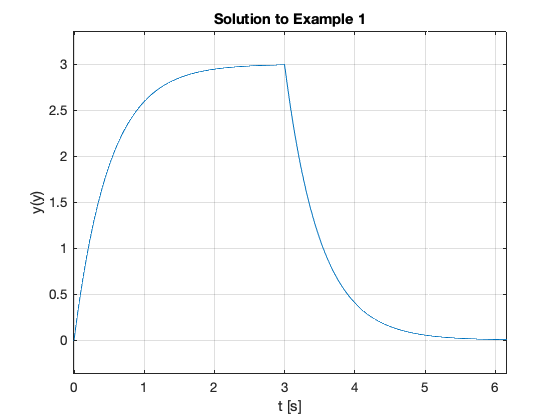
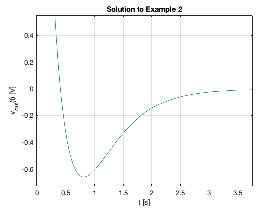
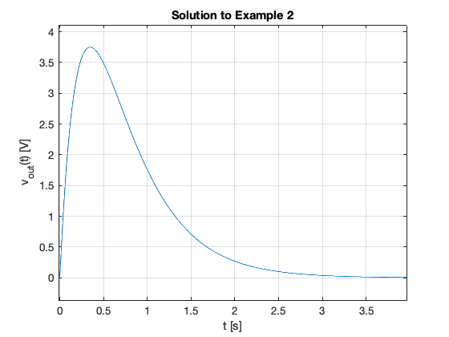

Fourier Transforms for Circuit and LTI Systems Analysis
In this section we will apply what we have learned about Fourier transforms to some typical circuit problems. After a short introduction, the body of this chapter will form the basis of an examples class.
Agenda
-
The system function
-
Examples
The System Function
System response from system impulse response
Recall that the convolution integral of a system with impulse response $h(t)$ and input $u(t)$ is
We let
Then by the time convolution property
The System Function
We call $H(\omega)$ the system function.
We note that the system function $H(\omega)$ and the impulse response $h(t)$ form the Fourier transform pair
Obtaining system response
If we know the impulse resonse $h(t)$, we can compute the system response $g(t)$ of any input $u(t)$ by multiplying the Fourier transforms of $H(\omega)$ and $U(\omega)$ to obtain $G(\omega)$. Then we take the inverse Fourier transform of $G(\omega)$ to obtain the response $g(t)$.
- Transform $h(t) \to H(\omega)$
- Transform $u(t) \to U(\omega)$
- Compute $G(\omega) = H(\omega).U(\omega)$
- Find $\mathcal{F}^{-1}\left{G(\omega)\right} \to g(t)$
Examples
Example 1
Karris example 8.8: for the linear network shown below, the impulse response is $h(t)=3e^{-2t}$. Use the Fourier transform to compute the response $y(t)$ when the input $u(t)=2[u_0(t)-u_0(t-3)]$. Verify the result with Matlab.

Solution
Matlab verification
syms t w
U1 = fourier(2*heaviside(t),t,w)
U1 =
2*pi*dirac(w) - 2i/w
H = fourier(3*exp(-2*t)*heaviside(t),t,w)
H =
3/(2 + w*1i)
Y1=simplify(H*U1)
Y1 =
3*pi*dirac(w) - 6i/(w*(2 + w*1i))
y1 = simplify(ifourier(Y1,w,t))
y1 =
(3*exp(-2*t)*(sign(t) + 1)*(exp(2*t) - 1))/2
Get y2
Substitute $t-3$ into $t$.
y2 = subs(y1,t,t-3)
y2 =
(3*exp(6 - 2*t)*(sign(t - 3) + 1)*(exp(2*t - 6) - 1))/2
y = y1 - y2
y =
(3*exp(-2*t)*(sign(t) + 1)*(exp(2*t) - 1))/2 - (3*exp(6 - 2*t)*(sign(t - 3) + 1)*(exp(2*t - 6) - 1))/2
Plot result
ezplot(y)
title('Solution to Example 1')
ylabel('y(y)')
xlabel('t [s]')
grid

See ft3_ex1.m
Result is equivalent to:
y = 3*heaviside(t) - 3*heaviside(t - 3) + 3*heaviside(t - 3)*exp(6 - 2*t) - 3*exp(-2*t)*heaviside(t)
Which after gathering terms gives
Example 2
Karris example 8.9: for the circuit shown below, use the Fourier transfrom method, and the system function $H(\omega)$ to compute $V_L(t)$. Assume $i_L(0^-)=0$. Verify the result with Matlab.

Solution
Matlab verification
syms t w
H = j*w/(j*w + 2)
H =
(w*1i)/(2 + w*1i)
Vin = fourier(5*exp(-3*t)*heaviside(t),t,w)
Vin =
5/(3 + w*1i)
Vout=simplify(H*Vin)
Vout =
(w*5i)/((2 + w*1i)*(3 + w*1i))
vout = simplify(ifourier(Vout,w,t))
vout =
-(5*exp(-3*t)*(sign(t) + 1)*(2*exp(t) - 3))/2
Plot result
ezplot(vout)
title('Solution to Example 2')
ylabel('v_{out}(t) [V]')
xlabel('t [s]')
grid

See ft3_ex2.m
Result is equivalent to:
vout = -5*exp(-3*t)*heaviside(t)*(2*exp(t) - 3)
Which after gathering terms gives
Example 3
Karris example 8.10: for the linear network shown below, the input-output relationship is:
where $v_{\mathrm{in}}=3e^{-2t}$. Use the Fourier transform method, and the system function $H(\omega)$ to compute the output $v_{\mathrm{out}}$. Verify the result with Matlab.

Solution
Matlab verification
syms t w
H = 10/(j*w + 4)
H =
10/(4 + w*1i)
Vin = fourier(3*exp(-2*t)*heaviside(t),t,w)
Vin =
3/(2 + w*1i)
Vout=simplify(H*Vin)
Vout =
30/((2 + w*1i)*(4 + w*1i))
vout = simplify(ifourier(Vout,w,t))
vout =
(15*exp(-4*t)*(sign(t) + 1)*(exp(2*t) - 1))/2
Plot result
ezplot(vout)
title('Solution to Example 2')
ylabel('v_{out}(t) [V]')
xlabel('t [s]')
grid

See ft3_ex3.m
Result is equiavlent to:
15*exp(-4*t)*heaviside(t)*(exp(2*t) - 1)
Which after gathering terms gives
Example 4
Karris example 8.11: the voltage across a 1 $\Omega$ resistor is known to be $V_{R}(t)=3e^{-2t} u_0(t)$. Compute the energy dissipated in the resistor for $0\lt t\lt\infty$, and verify the result using Parseval’s theorem. Verify the result with Matlab.
Note from tables of integrals

Solution
Matlab verification
syms t w
Calcuate energy from time function
Vr = 3*exp(-2*t)*heaviside(t);
R = 1;
Pr = Vr^2/R
Wr = int(Pr,t,0,inf)
Pr =
9*exp(-4*t)*heaviside(t)^2
Wr =
9/4
Calculate using Parseval’s theorem
Fw = fourier(Vr,t,w)
Fw =
3/(2 + w*1i)
Fw2 = simplify(abs(Fw)^2)
Fw2 =
9/abs(2 + w*1i)^2
Wr=2/(2*pi)*int(Fw2,w,0,inf)
Wr =
(51607450253003931*pi)/72057594037927936
See ft3_ex4.m